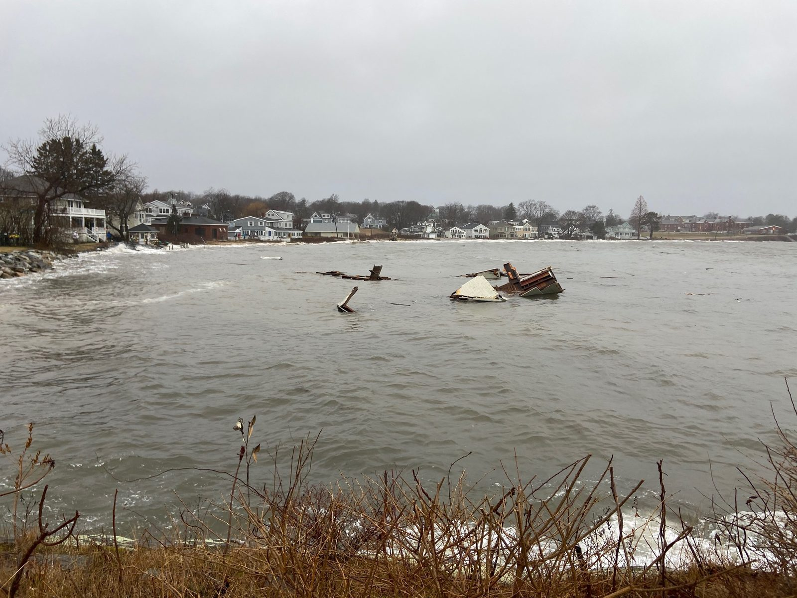
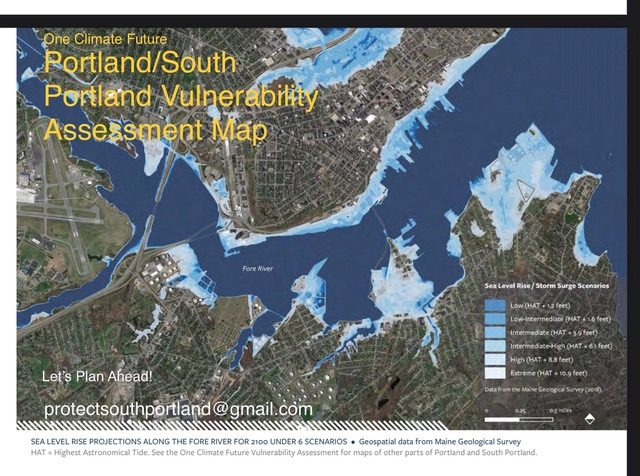

Preparing for sea level rise
Background
The January 2024 storm surge gave South Portland a preview of what water can do: flooded streets along the coast and a drenched working waterfront. Every year, sea level rise puts more of our shoreline in play.
When flooding hits, homes and businesses take the damage first. Roads and utilities follow, and so do the marshes and wetlands that buffer the coast against storms; when those wash out, the coastline loses its natural defense.
PSP works with the City’s coastal resilience efforts and keeps one particular worry in view: the same low-lying waterfront that stores petroleum is the waterfront the water is rising toward.
What is the City doing to prepare?

Stay up to date on the city's efforts through their site dedicated to coastal resilience. The City links that page from their homepage under “spotlights”; it serves as a hub for the most up-to-date information about the City's current coastal resilience efforts. A Coastal Resilience team, made up of staff leaders across various departments, meets regularly about the City's resilience plans and actions. Updates are added to that page as new information is available.
The City has also unveiled detailed Coastal Flooding Maps that show streets and neighborhoods vulnerable to flooding due to sea level rise under three scenarios (daily high tides, the occasional astronomical high tide, and major storms) over the next 25 to 75 years. Learn more about the City’s coastal resilience efforts and how you can get involved: southportland.gov/coastalresilience.
Links
- One Climate Future: Climate Action & Adaptation Plan (PDF)
- One Climate Future: Resilience Zoning for Resilient Buildings & Land Use (PDF)
- One Climate Future: South Portland's Vulnerability Assessment (PDF)
